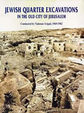

Hillel Geva
Jewish Quarter Excavations in the Old City of Jerusalem Vol I and II
Israel Exploration Society: Jerusalem, 2003
 Copies may beordered by contacting: The Israel Exploration Society P. O. Box 7041, 5 Avida Street, Jerusalem 91070 Israel. Fax: 972-2-6-247772 Phone: 972-2-6-257991 E-mail: ies@vms.huji.ac.il |
From 1969 to 1982, extensive archaeological excavations were conducted in the Jewish Quarter of the Old City of Jerusalem under the direction of the late Professor Nahman Avigad. During these excavations, impressive remains of fortifications, public buildings and domestic dwellings were found, as well as numerous artifacts from all of the periods of the continuous settlement of this area, beginning at the end of the Iron Age until the Ottoman period. Among the major discoveries made in the course of the Jewish Quarter Excavations are fortifications dating to the First and Second Temple periods; luxurious residences of the Upper City of Jerusalem of the Second Temple period, including the Palatial Mansion; the Byzantine Cardo and Nea Church; and a gate tower of the Early Islamic period. These and other findings from the excavation have dramatically changed our concept of the size and topography of Jerusalem in ancient times. Volume I is the first of the final reports of these excavations. It presents the architectural remains and part of the small finds from three excavation areas: A, W, and X-2. Here were found remains of the northern section of the First Wall that protected ancient Jerusalem's Southwestern Hill during the First and Second Temple periods. The remains of these fortifications were restored following their excavation. They are currently on display to visitors in open courtyards and under the new buildings of the Jewish Quarter. Volume II is the second of the final reports of these excavations. Included are pottery, glass, metal, stone, bone, epigraphic, numismatic and incised and painted plaster finds, among others, from three excavation areas: A, W and X-2. These finds range in date from the end of the First Temple period to the Late Islamic period. |
| Back to Publications | Table of Contents |